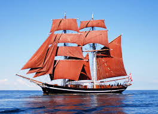

Sailing Ships & Maritime Exploration
Era: 3000 BCE – 1800s
From roughly 1400 to 1600 CE, advances in sailing ship design and navigation, including the compass, astrolabe, and improved hull designs, enabled Europeans to cross oceans reliably for the first time, kicking off the Age of Exploration. These ships connected previously isolated continents, triggering an unprecedented exchange of goods, crops, and diseases now known as the Columbian Exchange, alongside the far darker legacy of colonization and the transatlantic slave trade that reshaped the modern world.
Type: Maritime Transportation